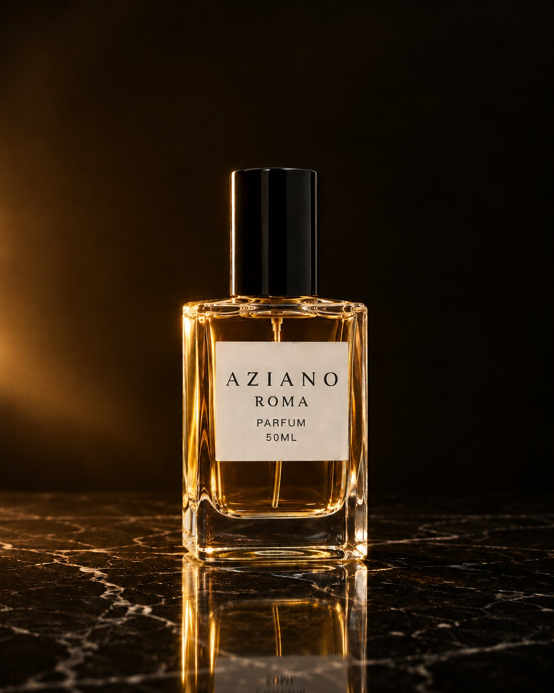
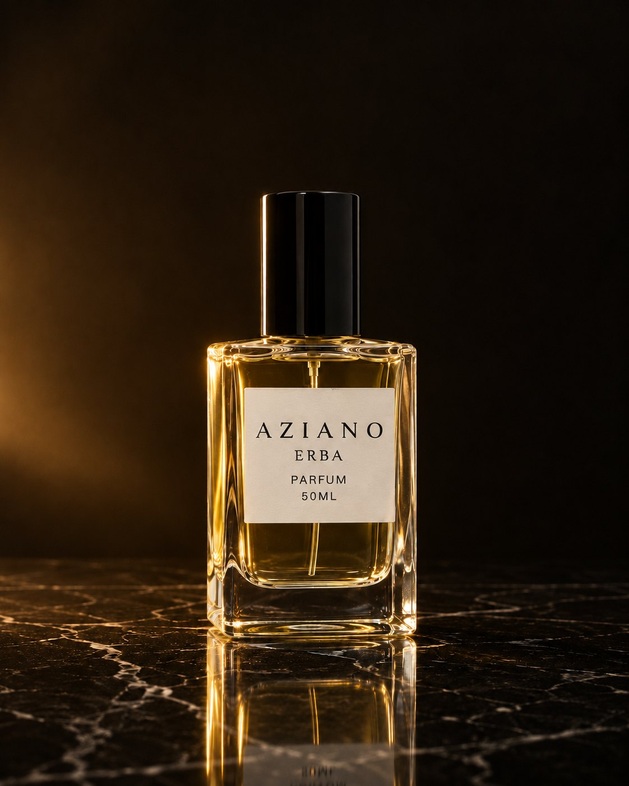

ROMA
Nero
Parfum · 50 ml
Parfum · 50 ml · Four fragrances, four cars
Black paint, city lights, the engine still warm.
Red, loud, golden hour on the old road.
Green hills, cypress shade, the roof down.
Warm bronze, walnut, the last bend before night.
Four parfums, four cars, one bottle: clear glass, a black cap and a paper label, nothing else to hide behind.

Nero

Rosso

Verde

Bronzo
The man behind AZIANO is half Italian and half Saudi, and his parfums carry both. Four fragrances, each one paired with a car.